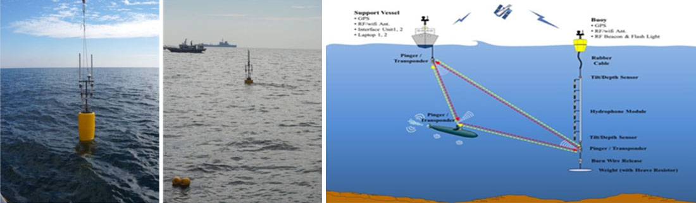

URN is a underwater radiated noise measurement system to measure underwater radiated noise from surface ships and underwater vessels as they maneuver. It evaluates the noise level by speed, analyses the root cause and judges the phenomenon of propellant cavitation and singing. This equipment is easy to install & recover, and can be produced in various shapes and sizes to fit into the to maritime discipline.
Applications
- Research for low noise vessels
- Improvement of warship stealth design and shipbuilding technology
Key Features
- Hydrophone: 3~6ch selectable
- Hydrophone Sensitivity: -170dB
- Frequency Range: 10Hz ~ 20kHz
- Tilt/Depth Sensor (optional)
- Buoy: Sampling up to 200kHz, 24bit LAN
- Other devices: GPS, RF/wifi Device, Flash light, Pinger
- Software analysis tool: Octave, FFT, Waterfall, Time & Power Spectrum, LOFAR, DEMON
